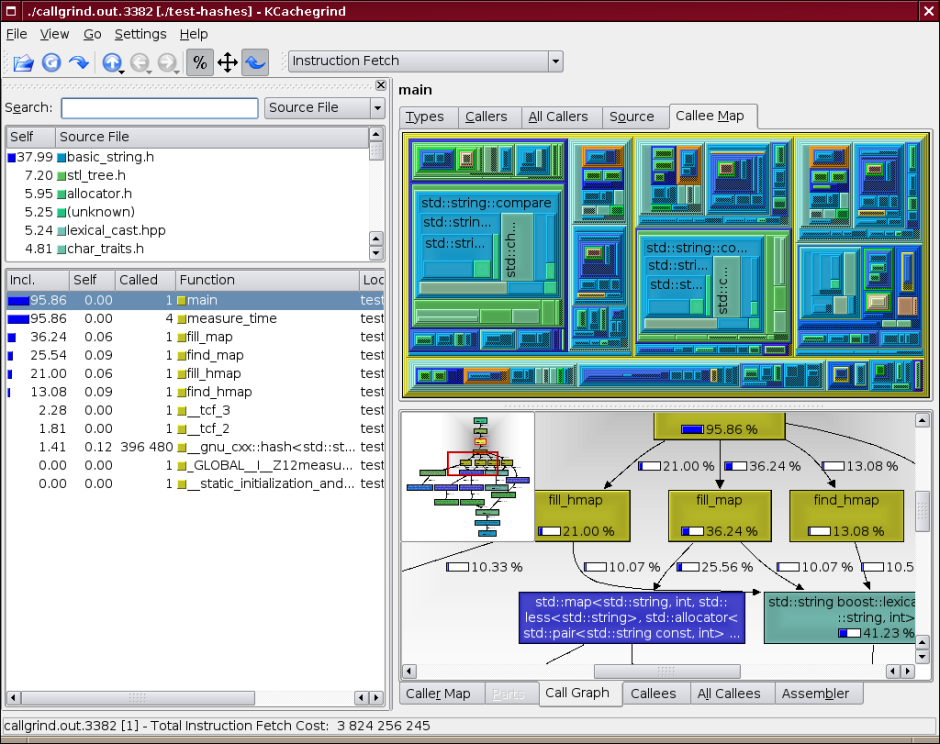

Valgrind is well-known as a tool for finding errors of work with memory. But except this, it also contain number of additional utilities for performance profiling, finding synchronization errors in multi-threading programs and analysis of memory consumption.
This article contain short description of work with Valgrind and usage of its modules. This description match Valgrind version 3.3. Additional information about work with Valgrind you can find on Valgrind's site, that contains different manuals, from easy Quick Start to very detailed user manual and technical description of Valgrind.
Valgrind has modular architecture and consists from kernel, that perform processor emulation, and modules, that collect and analyze information, obtained from the kernel during execution of analyzed code. Valgrind works under Linux on x86, amd64, ppc32 and ppc64 processors (i need to mention, that exists projects for porting Valgrind to other OSes), and exists some limitations, that could affect work of analyzed programs.1
Valgrind's distribution contain following modules:
There are also some number of modules, but they are experimental. Users also can create their own modules, that could perform analysis of executed code.
Currently, Valgrind packaged for almost all Linux distributions, and installation from sources required only in very rare cases, so I skip description of this process2.
Work with Valgrind is pretty simple — you can control its behaviour via command-line
options and doesn't require to make changes in analyzed program (although it's better to
rebuild program with debug information and disabled optimisation of code using compilers
flags -g and -O0). If program usually run with "./command arguments", then to run it
under Valgrind, you need to add to the start of this command line work valgrind, and
specify needed options. For example, if you use following command line:
valgrind --leak-check=full --leak-resolution=med ./command arguments
then this will run your program with all passed argument in memory leak finding mode.
By default Valgrind run memcheck module, but user can select another module by specifying
it with --tool option passing it the name of module, for example:
valgrind --tool=callgrind ./test
I need to mention, that often used options you can specify once, using configuration file
(by default this is ~/.valgrindrc), so it wouldn't required to specify these options in
each run of Valgrind.
Some of command-line options are common for all modules. To often used options we could relate following3:
--quiet-q) disable output of additional information, leave only messages about
errors.--verbose-v) enable output of additional information about Valgrind's work.--log-file%p template is used to specify process identificator (pid).--log-socket--log-fd2 — standard stream for error messages).--track-fdsyes or no, by default no) force Valgrind to output list of open files
when finishing the work.--trace-childrenyes or no, by default no) enable tracing of processes, created by
analyzed program with exec system call.--time-stampyes or no, by default no) inserts timestamps into output (time is counted
from start of program).Valgrind's user has number of options to control errors processing — starting from options for control of output format, and finishing with options for control stack size.
По умолчанию, Valgrind при печати сообщения об ошибке выдает стек вызова функций, которые
привели к появлению данной ошибки. По умолчанию глубина вложенности функций равна 12, но
это значение можно изменить с помощью опции --num-callers. При этом стоит отметить, что
увеличение этого параметра приведет к некоторому замедлению работы Valgrind.
Пользователь также может управлять тем, сколько и каких ошибок будет выведено в отчет.
Для этого имеется опция --error-limit (yes or no, by default yes), которая позволяет
ограничить отчет выводом 1000 различных ошибок. Если пользователь не ограничивает вывод
ошибок, то это также сказывается на производительности.
Кроме того, пользователь может управлять тем, какие ошибки будут выдаваться в отчет, а
какие нет. Это делается с помощью задания специальных директив (suppressions), которые
записываются в файлы, имена которых можно передать с помощью опции --suppressions. В
поставке Valgrind есть файл (обычно это /usr/lib/valgrind/default.supp), в котором
перечислены известные ошибки glibc, но кроме того, пользователь может изготовить
собственный файл, для чего можно использовать опцию --gen-suppressions, которая будет
запрашивать пользователя, нужно ли сгенерировать директиву для данной ошибки, или нет.
Пользователь также имеет возможность запуска отладчика при нахождении ошибок. Для этого
существует опция --db-attach (yes or no, by default no), при использовании которой у
пользователя будет запрашиваться разрешение на запуск отладчика. Опции для запуска
отладчика могут быть указаны с помощью опции --db-command, но значений по умолчанию вполне
достаточно для большинства случаев.
Valgrind приобрел популярность в первую очередь за свои возможности по нахождению утечек памяти в программах. За этот реализацию этих функций отвечает модуль memcheck, для которого определены отдельные опции, управляющие процессом проверки.
--leak-checkyes, summary или full) или отключает (значение no)
функцию обнаружения утечек памяти. Стоит отметить, что при использовании значения
summary, memcheck выдает лишь краткую информацию об утечках памяти, тогда как при других
значениях, кроме сводной информации, будет выдаваться еще и информация о месте, в котором
происходит эта утечка памяти.--leak-resolutionlow, med или high) указывает способ сравнения
стека вызовов функций. При значениях low и med, в сравнении используются два или четыре
последних вызова, соответственно, а при high, сравнивается полный стек вызова. Эта опция
влияет лишь на способ представления результатов поиска ошибок.--undef-value-errorsyes или no) определяет, будут ли показывать ошибки об
использовании не инициализированных значений.Прочие опции используются значительно реже, и в случае необходимости вы можете найти их описание в руководстве пользователя.
Существует несколько видов ошибок, обнаруживаемых модулем memcheck. Ошибки чтения и записи за пределами выделенной памяти (и еще несколько видов ошибок) выдаются сразу, в процессе работы программы. А ошибки, ведущие к утечкам памяти, выдаются Valgrind'ом после завершения работы анализируемой программы. Формат выдачи этих ошибок немного отличается, поэтому они будут описаны по отдельности.
Каждая строка в выводе Valgrind имеет префикс вида
==12345==где число обозначает идентификатор запущенного процесса.
В ходе своей работы, модуль memcheck определяет несколько видов ошибок работы с памятью:
delete
для памяти, выделенной с помощью new []Для этих ошибок данные выдаются по мере их обнаружения, и обычно они выглядят следующим образом:
Mismatched free() / delete / delete [] at 0x40043249: free (vg_clientfuncs.c:171) by 0x4102BB4E: QGArray::~QGArray(void) (tools/qgarray.cpp:149) by 0x4C261C41: PptDoc::~PptDoc(void) (include/qmemarray.h:60) by 0x4C261F0E: PptXml::~PptXml(void) (pptxml.cc:44) Address 0x4BB292A8 is 0 bytes inside a block of size 64 alloc'd at 0x4004318C: operator new[](unsigned int) (vg_clientfuncs.c:152) by 0x4C21BC15: KLaola::readSBStream(int) const (klaola.cc:314) by 0x4C21C155: KLaola::stream(KLaola::OLENode const *) (klaola.cc:416) by 0x4C21788F: OLEFilter::convert(QCString const &) (olefilter.cc:272)
В первой строке приводится описание соответствующей ошибки, а затем идет стек вызова функций, приведших к появлению данной ошибки. В том случае, где это необходимо (как в нашем примере), выдается также адрес блока памяти и место где этот блок памяти был выделен.
При окончании работы программы Valgrind выдает сводную таблицу, описывающую количество найденных ошибок, а также выделение памяти в программе, например:
ERROR SUMMARY: 2569904 errors from 493 contexts (suppressed: 17962 from 9) malloc/free: in use at exit: 85,066,939 bytes in 313,004 blocks. malloc/free: 10,552,914 allocs, 10,239,910 frees, 565,747,810 bytes allocated. For counts of detected errors, rerun with: -v searching for pointers to 313,004 not-freed blocks. checked 117,623,772 bytes.
И в самом конце отчета, выдается сводная таблица по каждому из типов ошибок работы с памятью:
LEAK SUMMARY:
definitely lost: 2,260 bytes in 47 blocks.
indirectly lost: 1,680 bytes in 66 blocks.
possibly lost: 2,703,124 bytes in 13,791 blocks.
still reachable: 82,359,875 bytes in 299,100 blocks.
suppressed: 0 bytes in 0 blocks.
Definitely lost означает, что Valgrind нашел область памяти, на которую нет указателей,
т.е. программист не освободил память, при выходе указателя за область видимости. Possibly
lost показывает, что найден указатель, указывающий на часть области памяти, но Valgrind не
уверен в том, что указатель на начало области памяти до сих пор существует (это может
происходить в тех случаях, когда программист вручную управляет указателями). Still
reachable обычно означает, что Valgrind нашел указатель на начало не освобожденного блока
памяти, что во многих случаях связано с выделением глобальных переменных и т.п. вещей.
Обычно эта информация показывается только при указании опции --show-reachable со значением
yes.
Между двумя этими таблицами выдаются данные по каждой из найденных ошибок работы с памятью, вида:
756 bytes in 27 blocks are definitely lost in loss record 1,077 of 1,267 at 0x4022AB8: malloc (vg_replace_malloc.c:207) by 0x7C485DA: __libc_res_nsend (res_send.c:425) by 0x7C47276: __libc_res_nquery (res_query.c:171) by 0x7C47B5B: __res_nquery (res_query.c:223) by 0x834A618: LookUp::LookUp(std::string&) (LookUp.cpp:83) by 0x8637C29: ClientThread::Connect(LogFileEntry&) (ClientThread.cpp:359) by 0x86394D5: ClientThread::Run() (ClientThread.cpp:215) by 0x80FD839: Thread::StartRunLoop(void*) (Thread.cpp:315) by 0x4163FD9: start_thread (pthread_create.c:297) by 0x43843AD: clone (in /usr/lib/debug/libc-2.7.so)
Первой строкой идет описание ошибки, вместе с указанием номера блока в списке потенциально потерянных блоков памяти, а также размером "потерянного" блока памяти. "Важность" ошибки соответствует описанию в итоговой таблице. После строки описания, приводится стек вызовов функций, которые привели к возникновению "потерянного" блока памяти. Этот список достаточно подробен для того, чтобы обнаружить точное место возникновения данной утечки памяти.
???, что означает отсутствие отладочной информации. Чтобы избежать
этого, необходимо не использовать вызовы dlclose для выгрузки модуля до завершения
программы (но это, соответственно, потребует изменение исходного кода программы).Профилирование программ может осуществляться с помощью двух модулей — callgrind и cachegrind. Каждый из них собирает разную информацию. При этом нельзя полагаться на результаты работы только одного из модулей, лучше проводить поиск "узких" мест в программах на основе анализа вывода каждого из модулей.
Модуль cachegrind проводит сбор статистики по попаданию в кэш первого и второго уровней
процессора при выполнении операций чтения и записи данных и инструкций программ, а также
статистику по работе модуля предсказания ветвлений в программах. По умолчанию, сбор
статистики о предсказании ветвления инструкций (branch prediction) не проводится, и если
вы хотите получить эти данные, то вы должны указать опцию --branch-sim со значением
yes. Кроме этого, пользователь имеет возможность указания дополнительных опций, например,
задающих размеры кэшей и т.п.
Результаты собранные данным модулем по умолчанию выводятся в файл с именем
cachegrind.out.<pid> (pid — идентификатор процесса). Если вы хотите использовать другое
имя файла, то можете воспользоваться опцией --cachegrind-out-file.
После завершения программы, Valgrind выдаст таблицу с суммарными данными, собранными во время выполнения программы, например:
I refs: 1,873,023 I1 misses: 2,222 L2i misses: 2,057 I1 miss rate: 0.11% L2i miss rate: 0.10% D refs: 808,914 (578,685 rd + 230,229 wr) D1 misses: 9,785 ( 9,212 rd + 573 wr) L2d misses: 5,119 ( 4,757 rd + 362 wr) D1 miss rate: 1.2% ( 1.5% + 0.2% ) L2d miss rate: 0.6% ( 0.8% + 0.1% ) L2 refs: 12,007 ( 11,434 rd + 573 wr) L2 misses: 7,176 ( 6,814 rd + 362 wr) L2 miss rate: 0.2% ( 0.2% + 0.1% )
в которой перечислены данные по выборке инструкций и данных процессором. А в файл
cachegrind.out (достаточно большой даже для очень простых программ), попадут детальные
данные, которые можно использовать для поиска "узких" мест в программах. Удобным
средством анализа является программа kcachegrind, но и в поставке Valgrind есть программа
cg_annotate, которая позволяет проводить анализ производительности программ4.
Для получения данных, в качестве параметров программы cg_annotate указывают имя файла с
результатами, собранными cachegrind, а также (опционально) список файлов с исходными
текстами, которые будут аннотированы по результатам работы cg_annotate. Чтобы не
указывать все файлы с исходными текстами вручную, cg_annotate принимает опцию --auto со
значением yes, и автоматически ищет нужные файлы (с помощью опции -I можно указать
каталоги, в которых должен производиться поиск файлов).
cg_annotate выводит на экран аннотированные исходные тексты, в которых для каждой функции
(и строки кода, в зависимости от опций) указывается количество операций чтения или записи,
а также другая статистика по работе программы. Используя эту информацию, разработчик
получает возможность оптимизировать места, наиболее сильно влияющие на работу программы.
Данный модуль позволяет собрать информацию о дереве вызова функций в программе. По умолчанию он собирает данные о количестве выполненных инструкций, зависимостях между вызывающей и вызываемой функциями и количество вызовов конкретных функций. Кроме того, можно включить эмуляцию кэшей, аналогичную cachegrind, что позволит собрать данные о доступе к памяти.
Данные собранные модулем выводятся в файл callgrind.out.<pid>, который затем может быть
проанализирован с помощью программ kcachegrind или callgrind_annotate (входящей в поставку
Valgrind).
callgrind_annotate выводит на экран данные о выполнении различных функций, и может
представлять их в различном виде, в зависимости от указанных опций. Также как и для
cg_annotate, можно указать опцию --auto, чтобы избежать указания файлов с исходными
текстами вручную.
По умолчанию, callgrind выводит информацию один раз, в конце выполнения программы. Но
пользователи, которым это нужно, могут использовать программу callgrind_control из
поставки Valgrind для получения промежуточных данных по запросу, или периодически.
Для анализа выделения памяти в программах используется модуль massif. Он собирает сведения не только о размерах блоков, выделяемых программой, но также и о том, сколько дополнительной памяти потребуется для хранения служебной информации.
После завершения программы под управлением massif, Valgrind выдает краткую сводку
использования памяти, а подробные данные выводятся в файл massif.out.<pid>. Для анализа
этих данных может использоваться программа ms_print, входящая в поставку Valgrind. Эта
программа может выдавать данные в виде графиков, демонстрирующих выделение памяти в
программе в процессе работы, например вот так:
MB
12.46^ #... . ...
| #::: : :::
| :#::: : :::
| .@ :#::: : :::
| . :@ :#::: : :::
| .: :@ :#::: : ::::
| ::: :@ :#::: : ::::
| : ::: :@ :#::: : ::::
| . : ::: :@ :#::: : ::::
| . : : ::: :@ :#::: : ::::
| ,. .,..,.. ,.., . ,.: : : ::: :@ :#::: : ::::
| . :@: :@::@:: @::@ : @:: : : ::: :@ :#::: : ::::,
| . :: :@: :@::@:: @::@ : @:: : : ::: :@ :#::: : ::::@
| .:: :: :@: :@::@:: @::@ : @:: : : ::: :@ :#::: : ::::@
| . :::: :: :@: :@::@:: @::@ : @:: : : ::: :@ :#::: : ::::@
| ,: : :::: :: :@: :@::@:: @::@ : @:: : : ::: :@ :#::: : ::::@
| . :@: : :::: :: :@: :@::@:: @::@ : @:: : : ::: :@ :#::: : ::::@
| ,:: :@: : :::: :: :@: :@::@:: @::@ : @:: : : ::: :@ :#::: : ::::@
| ,: @:: :@: : :::: :: :@: :@::@:: @::@ : @:: : : ::: :@ :#::: : ::::@
| : @: @:: :@: : :::: :: :@: :@::@:: @::@ : @:: : : ::: :@ :#::: : ::::@
0 +----------------------------------------------------------------------->Gi
0 3.539
Number of snapshots: 56
Detailed snapshots: [3, 5, 9, 19, 22, 25, 28, 31, 33, 42, 44 (peak), 54]
Пользователь может использовать дополнительные опции massif для управления частотой снятия
снапшотов, их количеством, списком функций, для которых будет производиться анализ (можно,
например, отслеживать только new или malloc) и т.п.
За поиск этого класса ошибок отвечает модуль helgrind. Он позволяет найти ошибки синхронизации в программах на языках C, C++ & Fortran, использующих POSIX Thread API. Helgrind помогает обнаружить следующие классы ошибок:
Helgrind позволяет найти эти ошибки за счет отслеживания состояния каждого из байтов памяти, используемой программой, а также за счет мониторинга различных событий, связанных с выполнением нитей (threads) — их создания и завершения, получение и освобождения блокировок и т.п.
Формат вывода информации немного похож на формат вывода ошибок модулем memcheck:
Possible data race during write of size 4 at 0x42B6530 at 0x41E5027: _IO_file_sync@@GLIBC_2.1 (fileops.c:923) by 0x41D9B5F: fflush (iofflush.c:43) by 0x40C6941: __gnu_cxx::stdio_sync_filebuf<.... >::sync() (stdio_sync_filebuf.h:156) by 0x40D2B93: std::basic_streambuf<... >::pubsync() (streambuf:255) by 0x40C8573: std::ostream::flush() (ostream.tcc:514) by 0x40C863A: std::basic_ostream<... >& std::flush<...>(std::basic_ostream<...>&) (ostream:520) by 0x40CD025: std::basic_ostream<... >& std::endl<... >(std::basic_ostream<... >&) (ostream:499) by 0x40C74A0: std::ostream::operator<<(std::ostream& (*)(std::ostream&)) (ostream.tcc:72) by 0x804A208: f1(int) (test-threads.cpp:19) by 0x804A534: void boost::_bi::list1<... >::operator()<...>(.....) (bind.hpp:232) by 0x804A578: boost::_bi::bind_t<...>::operator()() (bind_template.hpp:20) by 0x804A592: boost::detail::function::void_function_obj_invoker0<...>::invoke(...&) (function_template.hpp:158) Old state: shared-readonly by threads #2, #3 New state: shared-modified by threads #2, #3 Reason: this thread, #3, holds no consistent locks Location 0x42B6530 has never been protected by any lock
В данном примере helgrind указывает на возможное повреждение данных при одновременном выводе данных на экран несколькими нитями исполнения. Кроме стека вызова функций, приводящего к ошибке, также выдается состояние памяти до и после возникновения ошибки (old и new state), а также причина возникновения ошибки (в нашем случае — отсутствие блокировок для данного участка памяти).
Для управления поведением модуля определено некоторое количество опций, описание которых вы можете найти в руководстве пользователя, но значений по умолчанию обычно достаточно для нормальной проверки пользовательских программ.
To simplify work with Valgrind there are several additional programs, implementing different tasks.

1. Good description of Valgrind's architecture and principles of work you can find in article Valgrind: A Framework for Heavyweight Dynamic Binary Instrumentation
2. Interested could find description of installation process in Valgrind's user manual.
3. For option specification the standard form is used. Some options has one-letter
aliases, and if they has arguments, then they separated from option by space symbol.
For long-named options, such as --log-file, arguments are specified after option,
using = symbol as separator of name and value.
4. In Valgrind's user manual there is description of cachegrind output data, so user able to write their own analyzers.